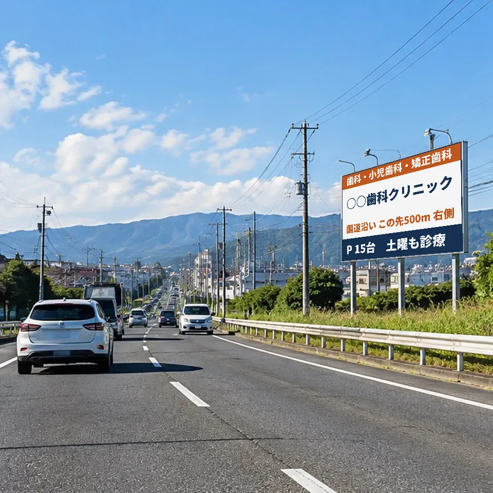
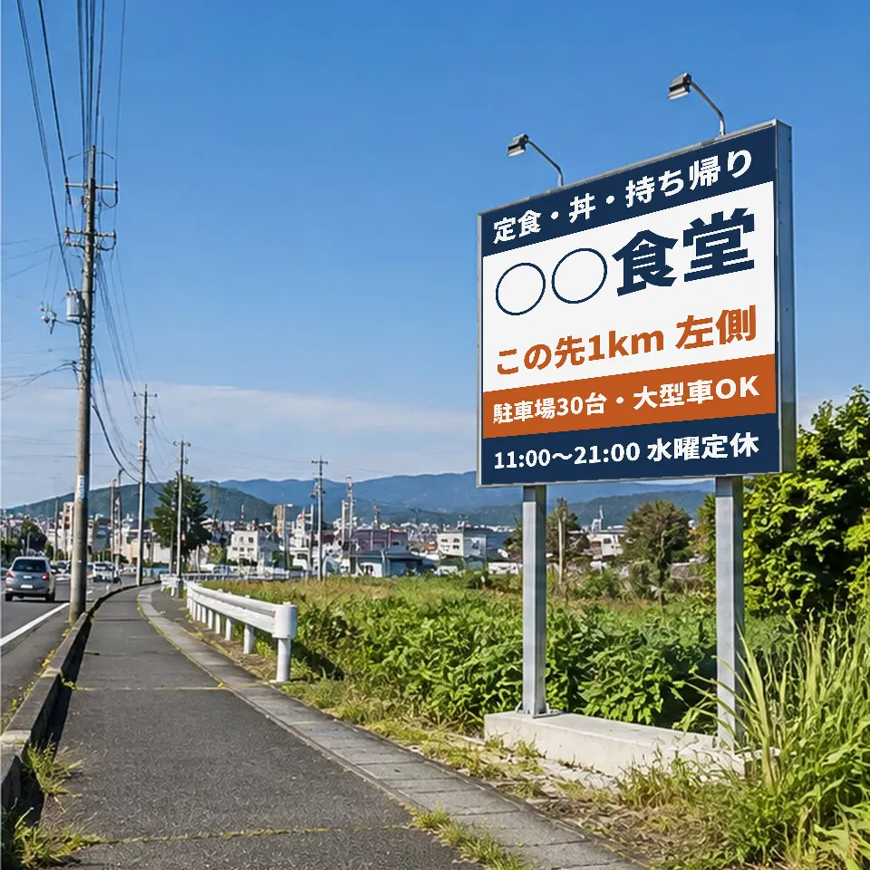
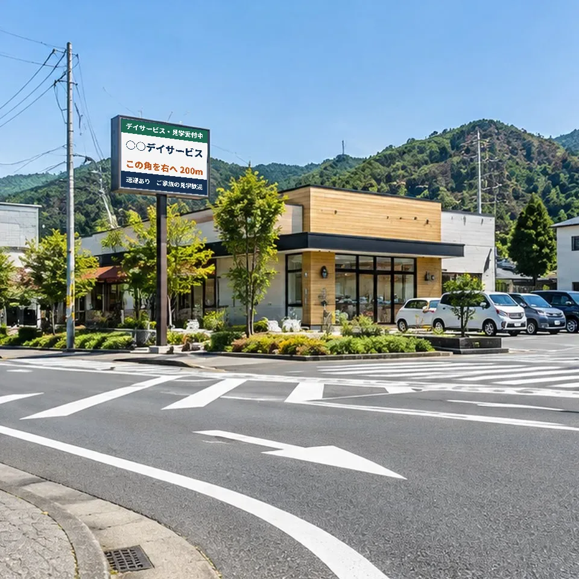

看板で名前を覚えてもらい、
マップと口コミで選んでもらう。

設置イメージ（架空の医院・実在の候補地ではありません）03つには、それぞれ別の役割があります
1お客様は、この順番で動きます
看板を見てそのまま来店する人は多くありません。多くの方は、看板で名前を覚え、あとで店名を検索し、マップで口コミと写真を見てから来店します。
2どれか1つだけだと、どこかで止まります
口コミは、来てくれた人にしか書けません。知られていなければ来店がなく、来店がなければ口コミは増えません。口コミの時代だからこそ、最初の一歩は看板による認知です。ネットの口コミも、始まりは通り道で名前を覚えてもらうという、泥臭い一歩からです。
| やっていること | 起きやすいこと |
|---|---|
| マップと口コミだけ | 「近くの歯医者」「ランチ」のように一般的な言葉で検索した人の、比較の一覧に並ぶだけになります。開業したばかりのお店は口コミの数で既存店に並ばれ、選ばれにくくなります。店を知らない人は、そもそも店名で検索しません。 |
| 看板だけ | 名前を覚えてもらっても、検索したときに写真が少ない・営業時間が古い・口コミがない状態だと、そこで止まります。看板の費用が来店につながりません。 |
| 3つを組み合わせる | 看板で覚えた人は、店名で検索します。店名で検索した人には、他店と並べられる前に、まず自店の情報が大きく表示されやすくなります。そこに写真と口コミがそろっていれば、比較される前に決めてもらえます。 |
33つをつなぐ、5つの決まりごと
4提案事例（モデルケース）
業種によって、看板を見る人、決める人、口コミで気にされることが違います。3つの架空の事業所で、ご提案の中身をお見せします。
幹線道路から1本入った場所に開業する歯科医院
- 課題
- 開業直後は口コミが0件です。「近くの歯医者」で検索されると、口コミの多い既存の医院と並べられ、選ばれにくくなります。
- 看板
- 来院が多い方向の幹線道路に、医院の約500m手前で野立て看板を1面。曲がり角に電柱広告で道案内。文面は医院名・診療科・「この先500m 右側」・駐車場・診療日だけにします。
- マップ
- 開業の前にGoogleビジネスプロフィールを登録し、オーナー確認を済ませます。外観・入口・駐車場・看板の写真、診療時間、WEB予約へのリンクを入れます。
- 口コミ
- 受付で会計時に、全員へ同じ案内カードを渡します。医院のホームページや看板には、口コミを転載しません（医療広告ガイドラインで患者の体験談は広告に使えないため）。返信では治療の内容や受診の有無に触れません。
- 測り方
- 医院名を含む語句での表示回数、ルート案内、WEB予約、新患の数を、掲出前（できれば3か月）と掲出後3か月で比べます。
- 費用の目安
- 野立て1面：月2.5万円×12か月＋製作・設置15万円＝初年度45万円 仮の値・照会前
- 元が取れる目安
- 年23人（月2人）の新患増。新患1人あたりの増分利益を2万円と仮定（45万円÷2万円、端数切り上げ）
歯科・クリニックの詳しい1年計画は開業集患プランの見本をご覧ください。

設置イメージ国道から少し奥まった、郊外の定食店
- 課題
- 初めての方が店に気づかず通り過ぎます。マップで見つけてもらっても「どこから入るのか」「車を停められるのか」が分からず、来店をやめてしまいます。
- 看板
- 昼に通勤や営業の車が多い方向から、店の約1km手前（左折で入れる側）に野立て看板を1面。店名・「この先1km 左側」・駐車場の台数・営業時間を載せます。
- マップ
- 駐車場の入口、曲がる目印、外観、看板の写真を入れます。メニューと価格の写真をお店から先に載せ、営業時間と定休日を正確にします。
- 口コミ
- 卓上とレジ横に案内を置き、全員へ同じ形でお願いします（特典は付けません）。料理の写真付きの口コミが増えると、初めての方が選びやすくなります。
- 測り方
- ルート案内と電話の数、店名を含む語句での表示回数、昼の来店組数（レジの記録）を、掲出の前後で比べます。
- 費用の目安
- 野立て1面：月2万円×12か月＋製作・設置12万円＝初年度36万円 仮の値・照会前
- 元が取れる目安
- 年180組（月15組）の新規来店増。新規1組あたりの増分利益を2,000円と仮定（36万円÷2,000円）

設置イメージ住宅街にあるデイサービス
- 課題
- 施設を選ぶのはご本人よりも、ご家族やケアマネジャーです。ご家族は「家から近いか」「送迎があるか」「中の雰囲気」で選びます。マップの情報が少ないと、見学の申し込みまで進みません。
- 看板
- 施設へ曲がる交差点の角に、ご家族が買い物や通勤で車で通る道から見える看板を1面。施設名・「この角を右へ200m」・「送迎あり」・「見学受付中」を載せます。
- マップ
- 室内、送迎車、入口と段差の様子の写真を入れます（利用者の顔は写しません）。見学の申し込み先として電話とWEBのリンクを入れます。
- 口コミ
- ご家族にお願いします。返信では、利用者個人が分かる内容に触れません。
- 測り方
- マップからの電話の数、見学の申し込み数、施設名を含む語句での表示回数を、掲出の前後で比べます。
- 費用の目安
- ポール看板1面：月1.5万円×12か月＋製作・設置10万円＝初年度28万円 仮の値・照会前
- 元が取れる目安
- 年6人の新規利用者増。新規利用者1人あたり、利用が続く期間の増分利益を5万円と仮定（28万円÷5万円、端数切り上げ）
「増分利益」は売上ではなく、新しいお客様1人（1組）から得られる売上から、材料費などの変動費を引いた額です。業種とお店の単価で大きく変わるため、診断ではお店の数字で計算し直します。費用は、照会を済ませる前の仮の値です。実際の月額・製作費は看板の場所と大きさで変わり、ご提案のときに見積もりでお示しします。効果を保証するものではありません。
5効果は、掲出前後の変化を複数の数で確かめます
「何で知りましたか」と聞いても、看板で名前を覚えてから検索した方は「Googleマップ」と答えがちです。また、看板から来た人を1人ずつ特定することはできません。そこで、掲出の前と後で、流れの各段階の数がどう変わったかを、いくつかの数を組み合わせて確かめます。
| 何を数えるか | どこで数えるか | 分かること | 注意点 |
|---|---|---|---|
| 前を通る台数 | 国の道路交通センサス | 看板が目に入りうる規模 | 実際に看板を見た人数ではない |
| 店名を含む語句での表示回数 | Googleビジネスプロフィールの「パフォーマンス」 | 店名で探す人が増えたか | 検索した人数そのものではない |
| プロフィールの閲覧数 | 同上 | お店への関心が増えたか | 看板から来た人とは限らない |
| ルート・通話・ウェブサイトのクリック | 同上 | 来店・予約の手前の行動 | 他の宣伝の効果も含まれる |
| 予約数・来店数 | 予約システム、レジ、受付簿 | 事業としての成果 | 他の宣伝の効果も含まれる |
できれば掲出前3か月と掲出後3か月を比べ、同じ時期に始めた他の宣伝や季節の影響も記録しておきます。前年の同じ月の数があれば、それとも比べます。数字はお店の管理画面からご共有いただきます（当社が管理者になる必要はありません）。
6当社がすること
- 無料で行うこと：看板が向いているかどうかの集客診断、看板の候補と費用の比較、マップと口コミの整え方の助言、効果を測るための掲出前の数の記録、掲出3か月後の振り返り（1回）。
- 当社が行わないこと：クリニック・歯科以外のお店のGoogleマップの運用代行や、口コミ対策の継続的な運用。必要な場合は、専門の会社をご紹介します。
- クリニック・歯科の方：Googleマップ・SNSの整備と運用を有料で承っています。料金と内容を見る →
- 看板の契約は、お店と看板会社とで直接結んでいただきます。当社は契約が成立した場合に、看板会社から紹介手数料を受け取ります。
- 口コミの代筆や、特典と引き換えに口コミを集める方法はご提案しません。
7あわせて読む
お店の住所と業種を送るだけで、そのお店のためのプランをお作りします。
メール info@bridgecycleco.com ／ LINE @907kxssd